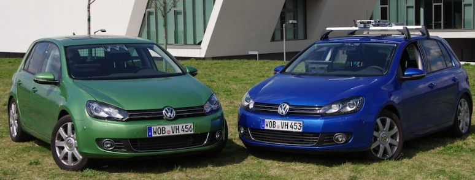

Professional Experience
-
Senior Research and Development Engineer, 2014-present
Institue of Deep Learning, Baidu Inc, Beijing, China
Collaborated with Kai Ni, Liang Wang -
Software Engineer Intern, 2013
Google Inc, Mountain View, CA, USA
Hosted by Art Pope and Vivek Verma -
Research Assistant, 2011-2013
Computer Vision Group, ETH Zurich, Switzerland
Advised by Prof. Marc Pollefeys
Collaborated with Lionel Heng, Gim Hee Lee, Friedrich Fraundorfer, Kevin Köser
Papers
-
3D Fully Convolutional Network for Vehicle Detection in Point Cloud arXiv
Bo Li
IEEE/RSJ International Conference on Intelligent Robots and Systems (IROS), 2017 -
Multi-View 3D Object Detection Network for Autonomous Driving arXiv
Xiaozhi Chen, Huimin Ma, Ji Wan, Bo Li and Tian Xia
Computer Vision and Pattern Recognition (CVPR), 2016 -
Vehicle Detection from 3D Lidar Using Fully Convolutional Network PDF
Bo Li and Tianlei Zhang and Tian Xia
Robotics: Science and Systems, 2016 -
Minimal Solutions for Multi-Camera Pose Estimation Problem
Gim Hee Lee, Bo Li, Marc Pollefeys and Friedrich Fraundorfer
International Journal of Robotics Research (IJRR), 2015 -
Minimal Solutions for Pose Estimation of a Generalized Camera
Gim Hee Lee, Bo Li, Marc Pollefeys and Friedrich Fraundorfer
International Symposium on Robotics Research (ISRR), 2013 -
A Multiple-Camera System Calibration Toolbox Using A Feature Descriptor-Based Calibration Pattern Github
Bo Li, Lionel Heng, Kevin Köser and Marc Pollefeys
IEEE/RSJ International Conference on Intelligent Robots and Systems (IROS), 2013

-
A 4-Point Algorithm for Relative Pose Estimation of a Calibrated Camera with a Known Relative Rotation Angle Github
Bo Li, Lionel Heng, Gim Hee Lee and Marc Pollefeys
IEEE/RSJ International Conference on Intelligent Robots and Systems (IROS), 2013 -
CamOdoCal: Automatic Intrinsic and Extrinsic Calibration of a Rig with Multiple Generic Cameras and Odometry Website Github
Lionel Heng, Bo Li and Marc Pollefeys
IEEE/RSJ International Conference on Intelligent Robots and Systems (IROS), 2013
-
Toward Automated Driving in Cities using Close-to-Market Sensors, an Overview of the V-Charge Project Website
Paul Timothy Furgale, Elena Cardarelli, Stefano Cattani, Wojciech Derendarz, Stefan Wonneberger, Ingmar Posner, Paul Newman, Lars Wolf, Stefan Brosig, Jan Effertz, Cedric Pradalier, Roland Siegwart, Kevin Koeser, Christian Hane, Bo Li, Martin Rufli, Ulrich Schwesinger, Gim Hee Lee, Julian Timpner, Rudolph Triebel, Lionel Heng, Rene Iser and Hugo Grimmett
IEEE Intelligent Vehicles Symposium, 2013
 -
Vanishing Point Detection using Cascaded 1D Hough Transform from Single Images
Bo Li, Kun Peng, Xianghua Ying and Hongbin Zha
Pattern Recognition Letters 33 (2012), pp. 1--8 -
Simultaneous Vanishing Point Detection and Camera Calibration from Single Images
Bo Li, Kun Peng, Xianghua Ying and Hongbin Zha
Proc. International Symposium on Visual Computing 2010, Part II, LNCS 6454, pp. 151--160
Open Source Activities
I have been a heavy user, patch fixer or contributor for some open source softwares in the area of computer vision and robotics. My contributed repositories include OpenCV Github , PCL Github , and Eigen Bitbucket . See my Github page Github , for my contributions and activities.
-
Mentor for the GSoC '16 project New camera model and parallel processing for stitching pipeline, Thanks to Jiri Horner for his great work in this project.
-
Mentor for the GSoC '15 project Omnidirectional Camera System Calibration, which integrates my previous open source Multiple-Camera System Calibration Toolbox Github to OpenCV 3.0. Thanks to Baisheng Lai for his great work in this project. The standalone repo can be found here. Github
Education
-
Eidgenössische Technische Hochschule Zürich (ETHZ), 2011-2013
Master of Science, Computer Science (D-INFK) -
Peking University (PKU), 2007-2011
Bachelor of Science, Intelligence Science and Technology